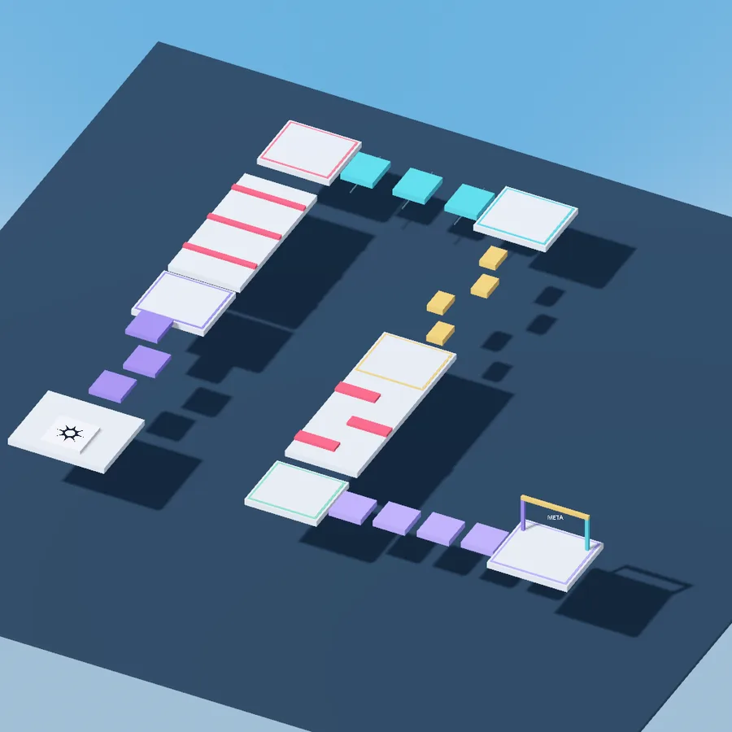

Experience start screen
Create an experience from the Baseplate, Blank or Classic Obby templates. The main scene keeps its own name, separate from the game's name.
Alpha · Pre-release
Rocket Meteor Engine: an open-source game engine built on Godot, with an editor inspired by Roblox Studio and Luau scripting through GodotLuau.
For now ROME only runs on Windows. Linux, macOS and Android builds are on the way.
What is ROME?
ROME keeps Godot's core and its reusable scenes, and builds its own interface, resource layout and creation tools on top. If you have used Roblox Studio you will feel at home: Explorer, Properties, the toolbar, Insert Object and the same shortcuts.
You script in Luau thanks to GodotLuau, which ships inside ROME and updates with it: game, services, LocalScript, ServerScript and ModuleScript work the way you already know.
Features
Everything on this list is already in 0.1.0-alpha.4 and has been tested on Windows.
Create an experience from the Baseplate, Blank or Classic Obby templates. The main scene keeps its own name, separate from the game's name.
Home, Avatar, UI, Script, Model and Plugins tabs. Part, Script, GUI, Material, Color, Group, Lock and Anchor have their own dropdown, and the + button creates your own tabs.
Ctrl+1 to Ctrl+5, Ctrl+L, Ctrl+G, Ctrl+Alt+G and Ctrl+U, snapping checkboxes for move and rotate, and the Test group with F5, F6 and Shift+F5.
Fixed services in the main scene and a + button on every row. Insert Object has a search box, categories and recent items, and new parts appear in front of the camera.
Data, Appearance, Collision, Behavior and more, plus Attributes you add and remove right from the panel.
Scenes and scripts share the tab bar. Each script shows its name and type icon, middle click closes a tab and a menu closes several at once.
Folders for your assets, scripts sorted into Scripts/LocalScript, Scripts/ServerScript and Scripts/ModuleScript, and the full file browser one click away.
On startup ROME checks GitHub, downloads in the background, verifies the SHA-256 and installs when you close it. If something fails, the previous version comes back.
GodotLuau travels inside ROME: game, services, Roblox-style signals, RemoteEvents and the task library with no extra setup.

Template
A six-stage obstacle course to see how a complete game is put together in ROME, and to start yours from there.
Download
A single .exe you open with a double click. It already includes the ROME runtime and GodotLuau: you don't need to install Godot or put any folder next to it.
Standalone 64-bit executable without an installer. This is the build we compile and test every release.
Download .exe 178 MB1682c59d7dc4ab35f418a7a9f189e026ce3bf6d804282bb714b1f5d7b13e5e54
Godot can export to many more platforms, but they haven't been tested specifically for ROME yet.
Updates
Since 0.1.0-alpha.2 you don't have to come back here for every version: ROME updates itself, and so do your experiences.
ROME looks at the published releases and downloads the executable for your platform in the background.
Every download is checked against its SHA-256 before it is installed. If it doesn't match, nothing changes.
Or right away from Help › ROME updates › Update and restart, which reopens the same experience. If anything fails, the previous version comes back.
If the connection drops or stalls for a minute, the download continues where it stopped, even the next time you open ROME.
When you open an experience made with another version, ROME replaces its copy of ROMEStudio and GodotLuau before loading it. It never touches scenes, assets, your script folders or the game logo, it respects the default scripts you edited, and it keeps whatever it replaced in .rome/backup-… inside the experience.
ROME no longer crashes when you close it right after opening it.
Update downloads are no longer lost when the connection drops.
The first version of ROME that updates itself.
The first alpha: the Studio-style editor, the three templates and GodotLuau inside, still without an updater.
Limits
It's an alpha, so here is the honest list of what is still missing or hasn't been tested enough.
ROME Engine is a Rocket Meteor / PimpoliDev project. It is not affiliated with, endorsed or sponsored by Roblox Corporation or the Godot Foundation. Godot's MIT license, its authors and the notices of its dependencies are kept in the repository.